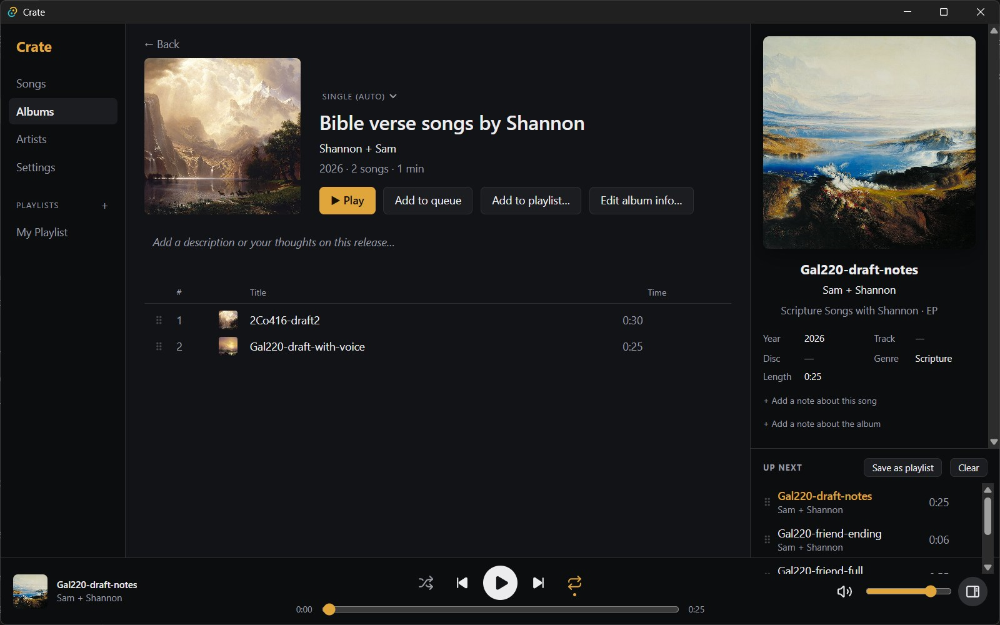

Albums first
Every release is an album, EP or single, worked out from its length and number of songs, and you can change it. Filter by type, and see an artist's albums, EPs and singles grouped on their page.
- Album pages with your own description
- Swap in any cover you like, or give a single song its own (great for singles released before the album)
- Drag songs to reorder an album; the new track numbers are saved to the files
